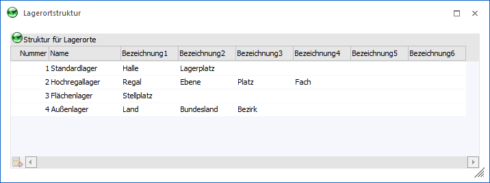
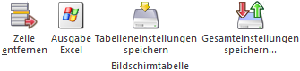
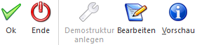
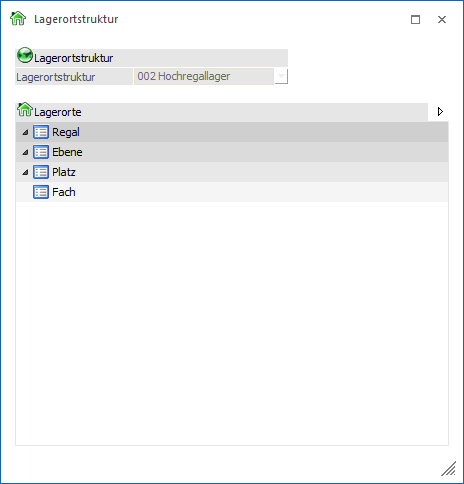

Im Menüpunkt…
1 WinLine FAKT
1 Stammdaten
1 Lagerorte
1 Lagerortstruktur
… wird die Lagerortstruktur angelegt.
In der Lagerortstruktur können beliebig viele Lagerstrukturen angelegt werden. Pro Struktur sind dabei maximal 6 Hierarchie-Ebenen möglich, wobei diese durch Vergabe einer Bezeichnung "aktiviert" werden. Diese Lagerstruktur wird in weiterer Folge bei den Artikeln hinterlegt.
Hinweis 1
Standardmäßig wird das Programm Lagerortstruktur in einem "Lesemodus" geöffnet, d.h. es können bestehende Lagerortstrukturen kontrolliert werden, ein Ändern bzw. eine Neuanlage ist nicht möglich. Hierfür muss zunächst mit Hilfe des Buttons "Bearbeiten" der "Bearbeitungsmodus" aktiviert werden.
Hinweis 2
Nach Anlage einer Lagerortstruktur können im Programmbereich "Lagerortestamm" pro Struktur Lagerorte erstellt werden. Durch die anschließende Hinterlegung der Struktur im Artikelstamm stehen die jeweiligen Lagerorte dem Artikel zur Verfügung.

In der Tabelle "Struktur für Lagerorte" werden die Lagerortstrukturen erfasst.
Ø Nummer
In dieser Spalte wird die fortlaufende Nummerierung, welche automatisch vergeben wird, angezeigt.
Ø Name
An dieser Stelle wird der Name der Struktur hinterlegt.
Hinweis
Das Zeichen "/" wird für die Darstellung der Lagerort-Hierarchie benötigt und kann somit nicht verwendet werden.
Ø Bezeichnung1 bis Bezeichnung6
In diesen Spalten werden die Bezeichnungen bzw. Beschreibungen für die einzelnen Hierarchie-Ebenen erfasst, wodurch die Hierarchie-Ebene "aktiviert" wird.
Achtung
Sobald Lagerorte für eine Ebene definiert wurden, kann die jeweilige Bezeichnung der Ebene nicht mehr gelöscht werden.
Tabellenbuttons

Ø Zeile entfernen
Durch Anwahl dieses Buttons wird die ausgewählte Lagerortstruktur gelöscht.
Hinweis
Das Löschen einer gesamten Struktur ist nur möglich, wenn keine Lagerorte für diese definiert wurden.
Ø Ausgabe Excel
Durch Anwahl des Buttons "Ausgabe Excel" wird der Inhalt der Tabelle an Microsoft Excel übergeben.
Ø Tabelleneinstellungen speichern
Die Spalten einer Tabelle können grundsätzlich an beliebige Positionen verschoben, bzw. in der Breite entsprechend angepasst werden. Durch Anwahl des Buttons "Tabelleneinstellungen speichern" werden die Einstellungen benutzerspezifisch gespeichert und bei dem nächsten Aufruf des Programmpunktes wieder vorgeschlagen.
Ø Gesamteinstellungen speichern…
Im Gegensatz zu "Tabelleneinstellungen speichern" können mit "Gesamteinstellungen speichern" mehrere Tabellenaufbauten gespeichert und nach Wunsch geladen werden. Zusätzlich werden Sonderfunktionen der Tabelle (z.B. "Spalte gruppieren") ebenfalls bei der Speicherung bedacht.
Buttons

Ø Ok
Durch Anwahl des Buttons "Ok" bzw. der Taste F5 werden die Lagerortstrukturen gespeichert.
Ø Ende
Durch Anklicken des Buttons "Ende" bzw. der Taste ESC wird das Fenster geschlossen und alle nicht gespeicherten Eingaben verworfen.
Ø Demostruktur anlegen
Mit Hilfe dieses Buttons werden 4 Demostrukturen angelegt, welche im Anschluss angepasst werden können.
Hinweis
Die Demostrukturen können nur im Bearbeitungsmodus erzeugt werden.
Ø Bearbeiten
Bei Anwahl dieses Buttons wird der "Bearbeitungsmodus" aktiviert, d.h. bestehende Lagerstrukturen können geändert und neue angelegt werden.
Ø Vorschau
In der Vorschau wird die Hierarchie der aktuell ausgewählten Lagerortstruktur visuell dargestellt. Diese Anzeige bleibt so lange geöffnet, bis das Fenster "Lagerortstruktur" geschlossen oder der Button "Vorschau" nochmals angewählt wird.
